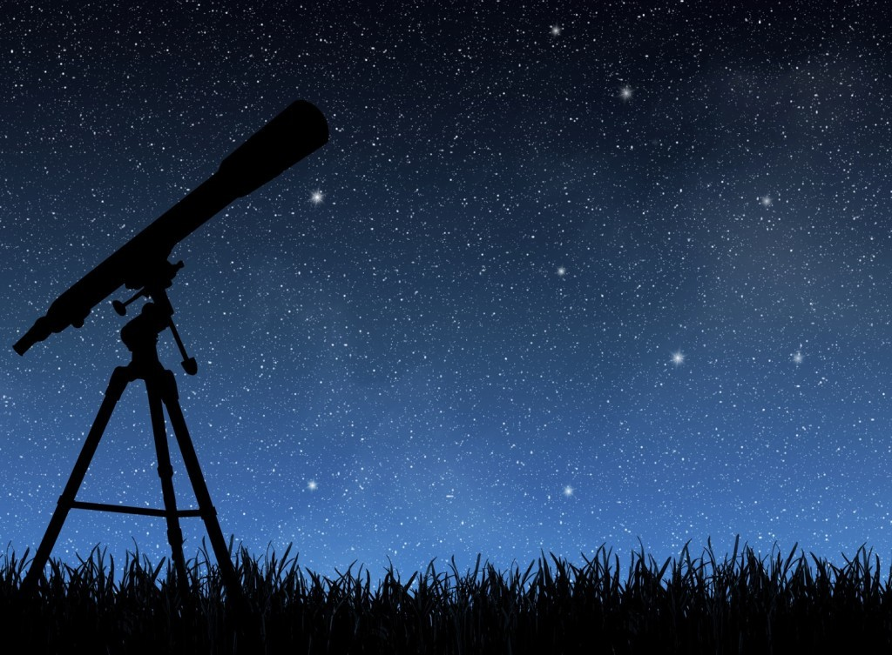
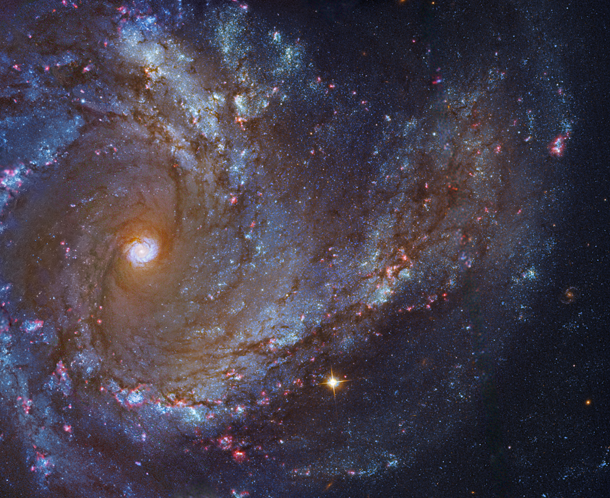
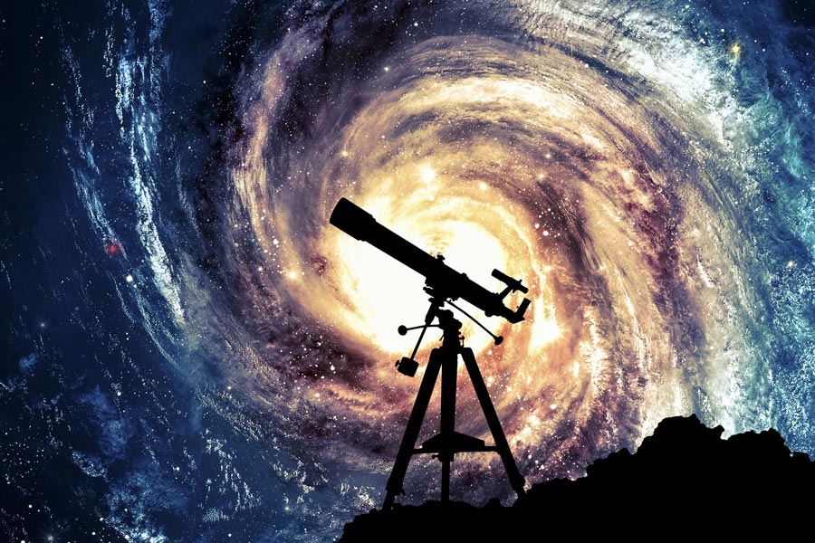

Планеты солнечной системы
В центре Солнечной системы находится Солнце, вокруг которого по своим орбитам двигаются восемь планет: Меркурий, Венера, Земля, Марс, Юпитер, Сатурн, Уран, Нептун.До 2006 г к этой группе планет относится и Плутон, он считался 9-й планетой от Солнца, однако, из-за его значительной отдаленности от Солнца и небольших размеров, он был исключен из этого списка и назван планетой-карликом. Вернее, это одна из нескольких планет-карликов в поясе Койпера.
Все указанные выше планеты принято делить на две большие группы: земная группа и газовые гиганты.
В земную группу относят такие планеты, как: Меркурий, Венера, Земля, Марс. Они отличаются небольшими размерами и каменистой поверхностью, а кроме того, расположены ближе остальных к Солнцу.
К газовым гигантам относят: Юпитер, Сатурн, Уран, Нептун. Для них характерны большие размеры и наличие колец, представляющих собой ледяную пыль и скалистые куски. Состоят эти планеты в основном из газа.

Меркурий
Эта планета является одной из самых маленьких в Солнечной системе, ее диаметр составляет 4 879 км. Кроме того, она ближе всех расположена к Солнцу. Такое соседство предопределило существенную разницу температур. Средняя температура на Меркурии в дневное время составляет +350 градусов Цельсия, а в ночное время — -170 градусов.- Меркурий первая планета от Солнца.
- На Меркурии нет времен года. Наклон оси планеты практически перпендикулярен к плоскости орбиты планеты вокруг Солнца.
- Температура на поверхности Меркурия не самая высока, хоть и расположена планета ближе всего к Солнцу. Первое место он уступил Венере.
- Первый исследовательский аппарат посетивший Меркурий был Mariner 10. Он провел ряд демонстрационных пролетов в 1974 году.
- День на Меркурии длится 59 земных суток, а год составляет всего 88 суток.
- На Меркурии наблюдаются самые резкие перепады температуры, которые достигают 610 °С. Днем температура может достигать 430 °С, а ночью -180 °С.
- Сила тяжести на поверхности планеты составляет всего 38% от Земной. Это означает, что на Меркурии Вы смогли бы подпрыгнуть в три раза выше, и легче было бы поднять тяжелые объекты.
- Первые наблюдения за Меркурием в телескоп осуществил Галилео Галилей в начале 17 века.
- У Меркурия нет естественных спутников.
- Первая официальная карта поверхности Меркурия была опубликована только в 2009 году, благодаря данным полученным с космических аппаратов Mariner 10 и Messenger.

Из каких разделов состоит астрономия?
Астрономия как наука о Вселенной включает в настоящее время несколько разделов:- Небесная механика. Этот раздел определяет массу и форму звезд, занимается изучением законов их передвижения под воздействием сил тяготения.
- Теоретическая астрономия. Ученые, занимающие теорией, разрабатывают компьютерные и аналитические модели небесных тел и явлений.
- Астрофизика. Она изучает физические и химические свойства космических объектов.
- Археоастрономия. Этот раздел изучает астрономическую историю и выясняет, какие существовали космические знания в древние времена.

Основа астрономии – это наблюдения
<Астрономы не могут ставить опыты, как, к примеру, это могут делать физики. Почти вся информация, которая имеется у астрономов о небесных телах, получена с помощью электромагнитного излучения. Наблюдения за Вселенной очень сложный и трудоемкий процесс, он требует внимательности, регулярности и сосредоточенности. Поэтому разговор о единице измерения, как о метрах и километрах в астрономии просто невозможен.При изучении солнечной системы используется астрономическая единица. Это размер большой полуоси орбиты Земли: 1 а.е. = 149 миллионов километров. Более крупные единицы длины – световой год и парсек, а также их производные (килопарсек, мегапарсек) – нужны в звездной астрономии и космологии. Световой год – расстояние, которое проходит луч света в вакууме за один земной год. Он равен примерно 9,5•1015 м. Парсек исторически связан с измерением расстояний до звезд по их параллаксу и составляет 1 пк = 3,263 светового года = 206 265 а.е. = 3,086•1016 м.
Методы, которые используются в других науках, таких как математика и физика, широко применяются и в астрономии. Космос является единственным местом, где вещество способно существовать при температурах в сотни миллионов градусов и почти при абсолютном нуле, в пустоте вакуума и в нейтронных звездах. В последнее время достижения астрономии стали использоваться в геологии и биологии, географии и истории.